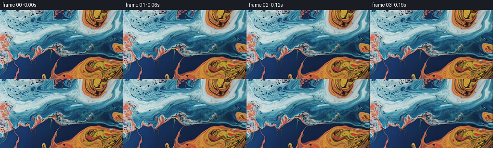
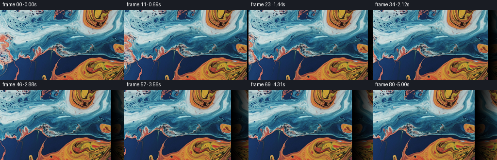
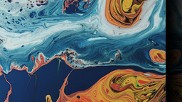
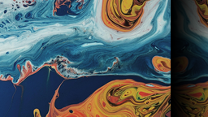
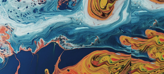
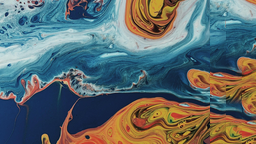
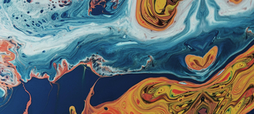
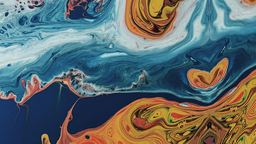
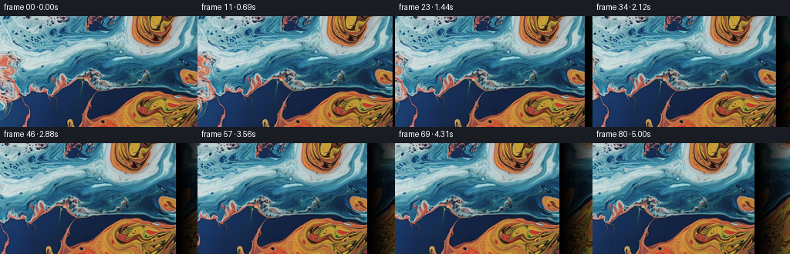

CODING AGENTS AS PIXEL WORLD MODELS
traex/GPT-5.6-Sol · 0002_s3
点击播放 · 原生 RGB 像素
此结果可播放，但该运行尚未通过最终提交审核。页面展示不代表评测通过。
逐轮保存的候选
回放视频、检查图与代码变化。
每份候选均可单独播放。实际图片检查记录在下方工具轨迹中。
候选 01播放与检查图
点击播放 · 原生 RGB 像素


展开代码变化
--- 上一保存版本
+++ 本次保存版本
@@ -0,0 +1,110 @@
+"""Generate the requested image-to-video camera pan.
+
+The source is an abstract macro photograph, so the cleanest deterministic way
+to reveal material to its right is to continue the cut-off marbling at that
+edge. The continuation uses a reflected (therefore position-continuous)
+coordinate field, then gently bends that field in two dimensions so it reads
+as more liquid marbling instead of a rigid mirror tile.
+"""
+
+from pathlib import Path
+import json
+
+import cv2
+import numpy as np
+from PIL import Image
+
+import artifact_io
+
+
+HERE = Path(__file__).resolve().parent
+
+
+def reflected_coordinate(v: np.ndarray, limit: int) -> np.ndarray:
+ """Reflect arbitrary coordinates into [0, limit-1]."""
+ period = 2.0 * (limit - 1)
+ q = np.mod(v, period)
+ return np.where(q <= limit - 1, q, period - q).astype(np.float32)
+
+
+def make_panorama(source: np.ndarray, extra: int) -> np.ndarray:
+ """Outpaint the right side with a gently deformed edge continuation."""
+ h, w = source.shape[:2]
+ panorama = np.empty((h, w + extra, 3), np.uint8)
+ panorama[:, :w] = source
+
+ # Coordinates in the new portion. At d=0 the map lands exactly on the
+ # source's right edge. Displacements start at zero, preserving the seam.
+ yy, dd = np.mgrid[0:h, 1 : extra + 1].astype(np.float32)
+ u = dd / float(extra)
+
+ # A fluid, non-repeating bend. The dominant term continues the structures
+ # cut by the right edge; the smaller terms prevent a mechanical symmetry.
+ bend_x = (
+ (1.4 * u) * np.sin(yy / 18.0 + dd / 16.0)
+ + (1.1 * u**1.35) * np.sin(yy / 7.7 - dd / 23.0)
+ )
+ map_x = (w - 1) - dd + bend_x
+
+ bend_y = (
+ (4.0 * u) * np.sin(yy / 22.0 + 0.55)
+ + (1.6 * u**1.25) * np.sin(yy / 8.5 + dd / 14.0)
+ + (1.1 * u**1.5) * np.sin(dd / 7.5 - yy / 31.0)
+ )
+ map_y = reflected_coordinate(yy + bend_y, h)
+
+ extension = cv2.remap(
+ source,
+ map_x.astype(np.float32),
+ map_y,
+ interpolation=cv2.INTER_CUBIC,
+ borderMode=cv2.BORDER_REFLECT_101,
+ )
+
+ # A tiny, progressive chroma variation keeps repeated pigments organic.
+ # It is zero at the join and remains deliberately very subtle.
+ ext_f = extension.astype(np.float32)
+ warm = (u[..., None] ** 1.4) * np.array([1.012, 1.000, 0.988], np.float32)
+ scale = 1.0 + warm - np.array([1.0, 1.0, 1.0], np.float32)
+ extension = np.clip(ext_f * scale, 0, 255).astype(np.uint8)
+ panorama[:, w:] = extension
+ return panorama
+
+
+def render() -> np.ndarray:
+ spec = json.loads((HERE / "task_spec.json").read_text())
+ n = int(spec["frames"])
+ h, w = int(spec["height"]), int(spec["width"])
+
+ source = np.asarray(Image.open(HERE / "first_frame.png").convert("RGB"))
+ if source.shape != (h, w, 3):
+ raise ValueError(f"Unexpected first-frame dimensions: {source.shape}")
+
+ # About 9 px/second: clear camera motion without rushing past the detailed
+ # marbling. Additional hidden pixels provide safe cubic-filter margins.
+ travel = 46.0
+ panorama = make_panorama(source, extra=64)
+
+ grid_y, grid_x = np.mgrid[0:h, 0:w].astype(np.float32)
+ frames = np.empty((n, h, w, 3), dtype=np.uint8)
+ frames[0] = source # Contract: byte/pixel-identical initial frame.
+
+ for i in range(1, n):
+ t = i / float(n - 1)
+ # Nearly constant pan with soft starts/stops. A 20% linear component
+ # avoids motion becoming imperceptibly slow at either endpoint.
+ eased = 0.20 * t + 0.80 * (3.0 * t * t - 2.0 * t * t * t)
+ offset = travel * eased
+ frames[i] = cv2.remap(
+ panorama,
+ grid_x + offset,
+ grid_y,
+ interpolation=cv2.INTER_CUBIC,
+ borderMode=cv2.BORDER_REFLECT_101,
+ )
+
+ return frames
+
+
+if __name__ == "__main__":
+ artifact_io.save(render(), HERE)
候选 02播放与检查图
点击播放 · 原生 RGB 像素

展开代码变化
--- 上一保存版本
+++ 本次保存版本
@@ -35,23 +35,20 @@
# Coordinates in the new portion. At d=0 the map lands exactly on the
# source's right edge. Displacements start at zero, preserving the seam.
- yy, dd = np.mgrid[0:h, 1 : extra + 1].astype(np.float32)
- u = dd / float(extra)
+ yy, dd = np.mgrid[0:h, 0:extra].astype(np.float32)
+ u = dd / float(extra - 1)
- # A fluid, non-repeating bend. The dominant term continues the structures
- # cut by the right edge; the smaller terms prevent a mechanical symmetry.
- bend_x = (
- (1.4 * u) * np.sin(yy / 18.0 + dd / 16.0)
- + (1.1 * u**1.35) * np.sin(yy / 7.7 - dd / 23.0)
+ # Continue source trajectories diagonally rather than simply reflecting
+ # them horizontally (which would make an obvious bilateral fold). The
+ # secondary bends emulate the long curved streamlines in acrylic pours.
+ map_x = (w - 1) - 1.15 * dd + (3.0 * u) * np.sin(yy / 14.0 + dd / 17.0)
+ map_y = reflected_coordinate(
+ yy
+ + 0.72 * dd
+ + (7.0 * u) * np.sin(yy / 25.0 + dd / 19.0)
+ + (2.0 * u) * np.sin(yy / 8.0 - dd / 15.0),
+ h,
)
- map_x = (w - 1) - dd + bend_x
-
- bend_y = (
- (4.0 * u) * np.sin(yy / 22.0 + 0.55)
- + (1.6 * u**1.25) * np.sin(yy / 8.5 + dd / 14.0)
- + (1.1 * u**1.5) * np.sin(dd / 7.5 - yy / 31.0)
- )
- map_y = reflected_coordinate(yy + bend_y, h)
extension = cv2.remap(
source,

可观测工具轨迹
实际执行的命令与返回图片。
命令 1exit 0
/bin/bash -lc "cat GENERATION_RULES.md && printf '\\n---PROMPT---\\n' && cat prompt.txt"
命令 2exit 0
/bin/bash -lc "find . -maxdepth 2 -type f -printf '%p %s bytes\\n' | sort"
命令 3exit 0
/bin/bash -lc "python - <<'PY'
from PIL import Image
im=Image.open('first_frame.png')
print(im.mode, im.size)
PY"命令 4exit 0
/bin/bash -lc "cat task_spec.json && sed -n '1,240p' artifact_io.py"
命令 5exit 0
/bin/bash -lc "which ffmpeg || true; python - <<'PY' mods=['numpy','PIL','cv2','scipy'] for m in mods: try: x=__import__(m); print(m,'ok',getattr(x,'__version__','')) except Exception as e: print(m,'NO',e) PY"
命令 6exit 0
/bin/bash -lc "python generate.py && python - <<'PY'
from pathlib import Path
import numpy as np
from PIL import Image
z=np.load('pixels.npz')['pixels']
frames=np.stack([np.asarray(Image.open(f'frames/{i:02d}.png')) for i in range(81)])
src=np.asarray(Image.open('first_frame.png'))
print('frames',frames.shape,frames.dtype)
print('first_equal',np.array_equal(frames[0],src),'maxdiff',np.abs(frames[0].astype(int)-src.astype(int)).max())
for i in [1,10,20,40,60,80]:
d=np.abs(frames[i].astype(np.int16)-frames[i-1].astype(np.int16))
print(i,'mean step',d.mean(),'changed',np.any(d,axis=2).mean())
print('npz',z.shape,z.dtype,'size',Path('pixels.npz').stat().st_size)
PY"命令 7exit 2
/bin/bash -lc "cat > /tmp/test_quilt.py <<'PY'
import cv2,numpy as np
from PIL import Image
src=np.asarray(Image.open('first_frame.png').convert('RGB'))
h,w=src.shape[:2]; extra=64
# patch quilting parameters
P=24; O=8; stride=P-O
canvas=np.zeros((h,w+extra,3),np.float32); canvas[:,:w]=src
weight=np.zeros((h,w+extra,1),np.float32); weight[:,:w]=1
# candidate source patches every 2 px
cands=[]
for sy in range(0,h-P+1,2):
for sx in range(0,w-P+1,2): cands.append((sy,sx))
# slots x starts overlap source
xs=list(range(w-O,w+extra,stride))
ys=list(range(0,h-P+1,stride));
if ys[-1]"'!=h-P: ys.append(h-P)
for xi,x in enumerate(xs):
for yi,y in enumerate(ys):
# evaluate overlap actual composed canvas, left O always existing; top O when yi
known=np.zeros((P,P),bool); known[:,:O]=True
if yi>0: known[:O,:]=True
# only coords canvas width
maxpw=min(P,w+extra-x); known=known[:,:maxpw]
tar=canvas[y:y+P,x:x+maxpw]
# compare blurred / down? full mse with gradient emphasis
scores=[]
for sy,sx in cands:
p=src[sy:sy+P,sx:sx+maxpw].astype(np.float32)
d=(p[known]-tar[known])
scores.append(np.mean(d*d))
inds=np.argpartition(scores,min(7,len(scores)-1))[:8]
# deterministic among top with tiny texture-diversity hash: best
bi=inds[np.argmin(np.array(scores)[inds])]
sy,sx=cands[bi]; patch=src[sy:sy+P,sx:sx+maxpw].astype(np.float32)
# feather weight: ramp in overlaps, plus vertical edge ramps for averaging
a=np.ones((P,maxpw),np.float32)
if x < w: a[:,:min(O,maxpw)] = np.linspace(0,1,min(O,maxpw),endpoint=False)[None,:]
else: a[:,:O] *= np.linspace(0,1,O,endpoint=False)[None,:]
if yi>0: a[:O,:] *= np.linspace(0,1,O,endpoint=False)[:,None]
if yi < len(ys)-1: a[-O:,:] *= np.linspace(1,0,O,endpoint=False)[:,None]
# preserve source
if x<w: a[:,:w-x]=0
oldw=weight[y:y+P,x:x+maxpw,0]
# weighted average to reconcile blocks
old=canvas[y:y+P,x:x+maxpw]
nw=oldw+a
mask=nw>0
old[mask]=(old[mask]*oldw[mask,None]+patch[mask]*a[mask,None])/nw[mask,None]
weight[y:y+P,x:x+maxpw,0]=nw
Image.fromarray(np.clip(canvas,0,255).astype('"'uint8')).save('/tmp/pano.png')
Image.fromarray(np.clip(canvas[:,46:302],0,255).astype('uint8')).save('/tmp/frame.png')
PY
python /tmp/test_quilt.py"命令 8exit 0
/bin/bash -lc "cat > .tmp/test_quilt.py <<'PY'
import cv2,numpy as np
from PIL import Image
src=np.asarray(Image.open('first_frame.png').convert('RGB'))
h,w=src.shape[:2]; extra=64
P=24; O=8; stride=P-O
canvas=np.zeros((h,w+extra,3),np.float32); canvas[:,:w]=src
weight=np.zeros((h,w+extra,1),np.float32); weight[:,:w]=1
cands=[]
for sy in range(0,h-P+1,2):
for sx in range(0,w-P+1,2): cands.append((sy,sx))
xs=list(range(w-O,w+extra,stride)); ys=list(range(0,h-P+1,stride));
if ys[-1]"'!=h-P: ys.append(h-P)
for xi,x in enumerate(xs):
for yi,y in enumerate(ys):
known=np.zeros((P,P),bool); known[:,:O]=True
if yi>0: known[:O,:]=True
maxpw=min(P,w+extra-x); known=known[:,:maxpw]
tar=canvas[y:y+P,x:x+maxpw]
scores=[]
for sy,sx in cands:
p=src[sy:sy+P,sx:sx+maxpw].astype(np.float32); d=(p[known]-tar[known]); scores.append(np.mean(d*d))
inds=np.argpartition(scores,min(7,len(scores)-1))[:8]; bi=inds[np.argmin(np.array(scores)[inds])]
sy,sx=cands[bi]; patch=src[sy:sy+P,sx:sx+maxpw].astype(np.float32)
a=np.ones((P,maxpw),np.float32)
a[:,:min(O,maxpw)] *= np.linspace(0,1,min(O,maxpw),endpoint=False)[None,:]
if yi>0: a[:O,:] *= np.linspace(0,1,O,endpoint=False)[:,None]
if yi < len(ys)-1: a[-O:,:] *= np.linspace(1,0,O,endpoint=False)[:,None]
if x<w: a[:,:w-x]=0
oldw=weight[y:y+P,x:x+maxpw,0]; old=canvas[y:y+P,x:x+maxpw]; nw=oldw+a; mask=nw>0
old[mask]=(old[mask]*oldw[mask,None]+patch[mask]*a[mask,None])/nw[mask,None]; weight[y:y+P,x:x+maxpw,0]=nw
Image.fromarray(np.clip(canvas,0,255).astype('"'uint8')).save('.tmp/pano.png')
Image.fromarray(np.clip(canvas[:,46:302],0,255).astype('uint8')).save('.tmp/frame.png')
PY
python .tmp/test_quilt.py"命令 9exit 0
/bin/bash -lc "python - <<'PY'
import cv2,numpy as np
from PIL import Image
s=np.array(Image.open('first_frame.png'));h,w=s.shape[:2]; ex=64
y,d=np.mgrid[0:h,1:ex+1].astype('float32'); u=d/ex
mx=(w-1)-1.15*d + 3*u*np.sin(y/14+d/17)
my=y+0.72*d + 7*u*np.sin(y/25+d/19)+2*u*np.sin(y/8-d/15)
# reflect y
p=2*(h-1); q=np.mod(my,p);my=np.where(q<=h-1,q,p-q).astype('float32')
e=cv2.remap(s,mx,my,cv2.INTER_CUBIC,borderMode=cv2.BORDER_REFLECT_101)
pano=np.concatenate([s,e],1)
Image.fromarray(pano).save('.tmp/pano2.png');Image.fromarray(pano[:,46:302]).save('.tmp/frame2.png')
PY"命令 10exit 0
/bin/bash -lc "python generate.py && python - <<'PY'
from PIL import Image
import numpy as np
from pathlib import Path
f=np.stack([np.asarray(Image.open(f'frames/{i:02d}.png')) for i in range(81)])
s=np.asarray(Image.open('first_frame.png'))
print(f.shape,f.dtype,'first identical:',np.array_equal(f[0],s))
# Interframe and endpoint sanity.
print('step mean min/max', *(lambda a:(round(a.min(),3),round(a.max(),3)))(np.abs(np.diff(f.astype(np.int16),axis=0)).mean((1,2,3))))
print('outputs:', {p:Path(p).stat().st_size for p in ['pixels.npz','index.html','inspection.png']})
PY"视觉工具实际返回图片 1

视觉工具实际返回图片 2

视觉工具实际返回图片 3

视觉工具实际返回图片 4

视觉工具实际返回图片 5

视觉工具实际返回图片 6

视觉工具实际返回图片 7

视觉工具实际返回图片 8

视觉工具实际返回图片 9

视觉工具实际返回图片 10

保存候选 3 份；完成命令 10 次；可验证图片返回 10 张。原始 API 响应与完整日志保留在本地。